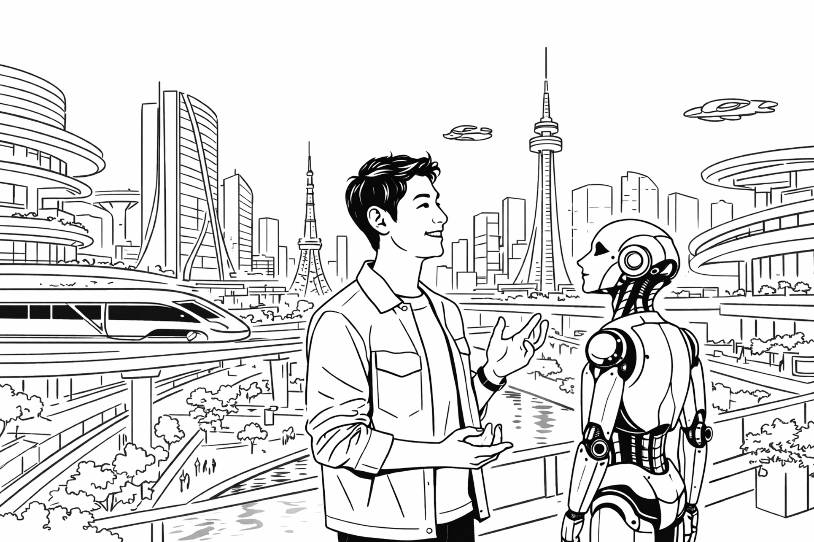

AIが描いた未来
AIに「ロボットと暮らす未来の都市生活」を描かせてみた。描かれたのは、空を飛ぶ乗り物や高度な都市機能、そして背の高い機械的なロボットが登場する技術中心の世界だった。しかし、そこでは人間の暮らしがどのように変わるのか、その意味は分かりづらかった。
そこで、人とAIロボットの関係に焦点を当て、背景を省き、人とAIロボットだけのシンプルな白黒の図になるよう再度依頼して画像を作り直した。AIが描いた未来は、果たして人の心に響くだろうか。
― その未来は人の心に響くだろうか
AIに「ロボットと暮らす未来の都市生活」を描かせてみた。描かれたのは、空を飛ぶ乗り物や高度な都市機能、そして背の高い機械的なロボットが登場する技術中心の世界だった。しかし、そこでは人間の暮らしがどのように変わるのか、その意味は分かりづらかった。
そこで、人とAIロボットの関係に焦点を当て、背景を省き、人とAIロボットだけのシンプルな白黒の図になるよう再度依頼して画像を作り直した。AIが描いた未来は、果たして人の心に響くだろうか。



AIが描いた未来は、技術的には魅力的に見える。しかし、その未来は本当に人の心に響く未来なのだろうか。
AIが描く未来と、人が感じる未来の魅力には、どのような違いがあるのだろうか。